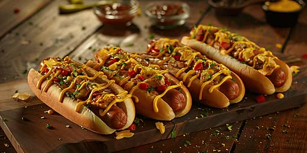

Sobre a culinária Norte americana
A culinária norte-americana é o conjunto de pratos e hábitos alimentares desenvolvidos nos Estados Unidos, resultado da influência de diversos povos e culturas. Ela é conhecida pela praticidade e pela grande variedade de alimentos.
Entre os pratos mais famosos da culinária norte-americana estão o hot dog, o hambúrguer e o waffle,Esses alimentos são populares por serem saborosos, acessíveis e práticos, além de fazerem parte da cultura dos Estados Unidos e serem consumidos em diversos países ao redor do mundo.
Pratos populares

Hambuerger
Um pão com um disco de carne e, geralmente, acompanhamentos como queijo, alface, tomate e molhos.

Waffle
Massa feita com farinha, leite, ovos e manteiga, assada em uma forma especial que cria seu formato quadriculado.

HotDog
Uma salsicha servida em um pão alongado, podendo ser acompanhado por molhos e outros ingredientes.